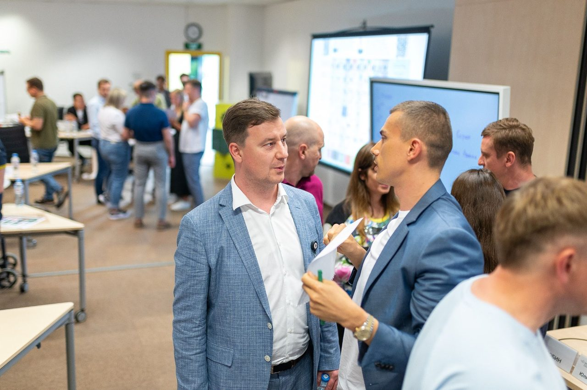

#Большеденег
Какие навыки развивает
Видеть рынок, слышать клиента, управлять воронкой и принимать коммерческие решения через цифры.
Кому подходит
Тем, кому нужно больше клиентов, продаж, прибыли и управляемости в коммерции.
Каждая программа развивает конкретную группу навыков предпринимателя через работу над собственным бизнесом. Не теория — внедрение, обратная связь и результат.

Не нужно выбирать программу наугад. В каждый момент рост бизнеса ограничивает конкретный навык предпринимателя — именно с него стоит начинать.
Входная диагностика определяет ваше главное ограничение и показывает, какая программа даст максимальный эффект в ближайшие 90 дней.
Сейчас открыты две основные программы, а следующие направления формируются на основе работы с предпринимателями.
Школа работает с двумя ключевыми ограничениями предпринимателя: коммерческий рост и управляемость бизнеса.
Видеть рынок, слышать клиента, управлять воронкой и принимать коммерческие решения через цифры.
Тем, кому нужно больше клиентов, продаж, прибыли и управляемости в коммерции.
Видеть компанию как систему ролей, распределять ответственность, нанимать под функцию и делегировать решения.
Тем, у кого всё держится на них и кто хочет управляемый бизнес.
Формат участия и условия обсуждаются после входной диагностики.
Мы строим #БольшеСвободы как полноценную школу предпринимателя — поэтому следующие направления закроют не только деньги и управление, но и энергию, устойчивость, стратегию и смысл.
Устойчивость, фокус и энергия предпринимателя.
Если эта тема актуальна, расскажите об этом на диагностике.
Стратегия, миссия и следующий горизонт предпринимателя.
Если эта тема актуальна, расскажите об этом на диагностике.
Мало заявок, слабые продажи, нет прибыли, бизнес не растёт в деньгах.
Предпринимателям, которым нужно больше клиентов, продаж и прибыли.
Управляемая коммерческая система: предсказуемый поток заявок, рост продаж и прибыли.
Каждый инструмент тренирует конкретный навык предпринимателя: он начинает действовать иначе, а рост бизнеса становится следствием.
Формат: теория → внедрение в своём бизнесе → обратная связь → корректировка → навык. С куратором и группой предпринимателей.
Всё держится на собственнике, хаос в управлении, нет времени на развитие.
Предпринимателям, которые хотят выйти из операционки и построить управляемый бизнес.
Бизнес, который работает без ручного управления собственника, и свободное время предпринимателя.
Каждый инструмент тренирует конкретный навык предпринимателя: он начинает действовать иначе, а рост бизнеса становится следствием.
Формат: теория → внедрение в своём бизнесе → обратная связь → корректировка → навык. С куратором и группой предпринимателей.